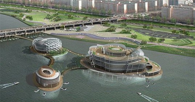

Floating Island

Address
Seoul-si Seocho-gu Banpo-dong
Type
Amusement parks
Inquiries
1330 tt call center: +82-2-1330 (Korean, English, Japanese, Chinese)
For more info: +82-2-3447-3100, 3084
Homepage
floatingisland.com (Korean, English, Japanese, Chinese)
hangang.seoul.go.kr (Korean, English)
Introduction
Floating Island, located near the southernmost part of Banpo Bridge, is the nation’s first-ever artificial island that floats on the surface of Hangang. The Island is comprised of three flower-themed islets, Visat, Viva and Terra, with different functions. The island sizes 9,629㎡ in total (9,995㎡, including the bridges connecting the islets).
The first islet, Vista, takes the form of a flower in full bloom. It is a multi-functional cultural facility which can be used as a venue for performances, international conferences, exhibitions and so forth. The second islet, Viva, looks like a flower bud. A range of cultural experience and event zones including Beat Square, Youth Woods and 3D restaurants will be located here. The third islet, Terra, takes the form of a seed. The islet has water sports facilities and outdoor garden from which you may enjoy the picturesque scenery of Hangang River.
Around the Floating Island are LED lights that feature a fantastic night view under the theme of ‘gleaming light in the mist.' The Floating Island, a prospective venue for a range of artistic performances and exhibitions, will become a landmark attraction at Hangang River, along with Jamsu Bridge Pedestrian Square and Banpo Rainbow Fountain.
Opening date
May, 2011
Parking facilities
Available (Banpo Hangang Park)
Parking fees
1,000 won for first 30min / 200 won for each additional 10min
- Daily parking: 10,000 won
- Monthly parking: 50,000 won
Operating hours
November-March: 09:00-21:00;
April-October: 09:00-23:00.
Available facilities
Island I, II, III, Media Art Gallery.
Admission fFees
Free
Directions
Subway
Express Bus Terminal Station (Seoul Subway Line 3, 7 or 9), Exit 8-1.
Go straight for 250m, and turn right at the Express Bus Terminal 4-way intersection.
Continue going straight for 400m and cross the road.
Go straight through the underpass to arrive at Banpo Hangang Park.
[Bus]
Take bus 143, 401, 405, 406 or 8340 and get off at Banpo Hangang Park.
Bus
Take bus 143, 401, 405, 406 or 8340 and get off at Banpo Hangang Park.